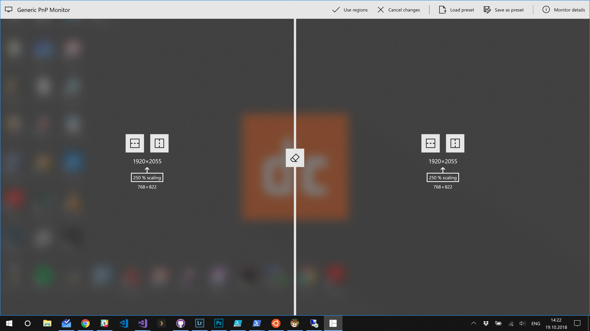

MaxTo lets you work differently with your windows, but you have to learn our terminology first.
MaxTo originated as a simple way to intercept whenever a window in the system was maximized, and putting that window into a predefined region instead of the entire screen. It has since added quite a few different features, but this core remains.
A region is a rectangular area of the screen.
This lets you very quickly line up your windows the way you want them. And it doesn't waste a single pixel of screen space.
When you install MaxTo you divide the working area of your monitors into regions. These active regions define where your windows will go.
When MaxTo first starts, and you've walked through the welcome screen, you'll be presented with a screen that looks something like this.

For the programmers out there, the regions are actually a binary tree, with the nodes being your regions.